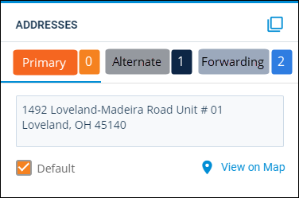

Source: https://rmxhelp.rentmanager.com/MicroContent/Resources/MicroContent/Improve-Search/scripting.htm
Scripting
Scripting is Rent Manager's command-based language that gives you read-only access to your data through features that accept scripts like letter templates, Report Writer, and so on. Scripts can be used to merge dynamic values into letters and reports and also to generate, store, and display complex calculations for various business needs.
There are several tools that can help you write scripts more effectively in Rent Manager.
| Tool | Description |
|---|---|
|
Insertable Fields List |
The Insertable Fields list contains functions that can be added to your letter template as placeholders that populate with specific information related to the recipient of the letter. Most of the functions have names that accurately describe the data they add to a template. You can hover over a function to view its tooltip, which lists any associated parameters. |
|
Script Builder |
The Script Builder page is a test environment for scripting functions. You can modify a script from within the editor, test the script, and insert the script back into the source letter, report, field, and so on. Additionally, it provides tools to indicate any errors in the script. Any combination of static text, insertable fields, and scripts can be tested in the script builder. |
|
Scripting Assistant |
Scripting assistant is a feature that automatically suggests and can auto-fill script functions, parameters, and classes as you type out a script. The scripting assistant also uses tooltips to suggest how to further build the script by selecting your desired class, function, or parameter. By selecting a suggestion from the tooltip, scripting assistant helps reduce entry errors. |
Basic Script Structure
A basic script consists of two structural components: the class and the function. Additionally, there are two syntax elements to every basic script: brackets and periods.
[Tenant.Balance]
[Vendor.Balance]
Classes determine which account type in the database to examine with the function. The first example identifies Tenant as the class, which means the Balance function displays a tenant's transaction ledger balance. The second example identifies Vendor as the class, which means the Balance function displays a vendor's ending account balance.
For a complete list of classes, refer to Script Classes.
Functions determine what the script examines in the database and typically what should display. In these two examples, the function is Balance and it displays the balance of a specific account.
For a complete list of functions, refer to Script Functions.
More Information
Functions and classes are not case-specific. Capitalizing these scripting elements do not impact the script.
Both scripts are enclosed in brackets [like this]. Brackets are used to indicate when a single script begins and ends. The period ( . ) is used to separate the class from the function.
Classes
A script may have multiple classes that precede the function. This syntax specifies a logical path for Rent Manager to find data based on the relationship between each class. Classes in a scripting path are always separated by a period.
[Tenant.Property.SquareFootage]
This script starts on a specific tenant, then it moves to the default property associated with that tenant, and then it displays the square footage of that property.
[Tenant.Lease.Unit.SquareFootage]
This script starts on a specific tenant, then it moves to the first lease of that tenant, then it moves to the unit associated with that lease, and then it displays the square footage of that unit.
Even though the function is the same in both scripts, the displayed results are different.
More Information
Each class in the path must have a direct relationship with the previous class in order for the script to work. For example, [Tenant.Vendor.Balance] does not work because there is no meaningful connection in the Rent Manager database between tenants and vendors.
Assumed Classes
You may notice that some scripts don't have a class specified. For example, if you double-click the Balance function in a tenant-type letter template, the resulting script is [Balance]. Since the basic structure of any script is [Class.Function], how does this script operate correctly?
It works is because Rent Manager automatically applies an assumed (default) class to your script depending on where the script resides in your database. For example, in a tenant-type template, Tenant is always the assumed class. In a property-type template, the Property class is assumed.
In a tenant-type template, Rent Manager assumes every function begins with the Tenant class whether it's specified or not. In this case, Rent Manager automatically adjusts the script to [Tenant.Balance] and therefore displays the balance of a tenant account.
More Information
The easiest way to identify the assumed class for your template is to look at the type of template you are creating. The template type is always your default (assumed) class with one exception: Prospect-type templates. Prospect-type templates actually use Tenant as the default class, not Prospect.
Parent and Child Classes
When multiple classes precede a function, the first class is considered the parent class, and each subsequent class is considered a child of the previous class. It's possible to have multiple child classes in a path.
| Parent Class | Child Class | Child Class | Function |
|---|---|---|---|
| [Tenant. | Lease. | Unit. | SquareFootage] |
Furthermore, the first class in the script is not always the parent. In a tenant template, the script below has an assumed parent class of Tenant, followed by two child classes: Lease and Renewal.
| Child Class | Child Class | Function |
|---|---|---|
| [Lease. | Renewal. | LeaseStartDate] |
It is important to be able to identify parent and child classes in a script, because the parameters that can be passed to these classes change based on how they are used in a script.
Parameters
Parameters can be used after classes or functions to further specify the information that displays in your letter or report.
Class Parameters
Class parameters are values that provide more specificity regarding the examined class. Parameters are always enclosed in parentheses. The parameter(s) that can be passed to a class may change depending on whether it's used as a parent or child class in the script.
Class IDs
An ID, which is a system-generated unique number assigned by Rent Manager to each major account in the database, can be specified for the parent class. It is rare to pass a system-generated ID to a parent class because scripts are typically used to retrieve dynamic data based on different accounts.
[Tenant(101).Balance]
This script displays the balance of the specific tenant with an account number of 101.
[Tenant(419).FirstName]
This script displays the first name of the tenant with an account number of 419.
If no ID is provided to a parent class in your script, when executed, Rent Manager defaults the ID to the current account. For example, if you are testing a script in script builder in a tenant-level letter template, the ID of the tenant you tested is used. If you ran the letter for a specific tenant, that tenant's ID is passed to the class.
Class Index
Indexing is another optional parameter that can be specified after certain child classes. This is how Rent Manager handles a one-to-many relationship between two classes. For example, [Tenant.Lease.Balance] is a script that displays the balance of a specific tenant's lease, but what if the tenant has more than one lease?
In this case, Rent Manager labels each lease associated with that tenant with an index value. The first record always receives an index value of 0. The first additional record (or second record) receives an index of 1, and so on.
More Information
If no class index is provided for a child class, the index value defaults to 0.
[Tenant.Lease.Balance]
[Tenant.Lease(0).Balance]
Both of these scripts output the same result: the balance of the tenant's first lease. The first script did not pass the Lease class a parameter so it defaulted to 0. The next script simply entered the default value of 0 to represent the tenant's first lease.
[Tenant.Lease(1).Balance]
This script includes an index value of 1 for the Lease class, which represents the first additional lease for the tenant; this script displays the current balance of the tenant's second lease.
Class Name
Class names are another optional parameter that can be specified after certain child classes. This is another way Rent Manager handles a one-to-many relationship between two classes. However, instead of referencing the class by an index value created by Rent Manager, you are referencing the class based on a specific name that you defined.
For example, a tenant can have multiple addresses. These addresses are indexed with the default address being 0 and each subsequent address labeled as 1, 2, 3, and so on. However, addresses have formal names that you've already defined in the database. In the example below, there are three different tenant-type addresses: Primary, Alternate, and Forwarding.

Rent Manager also indexes this one-to-many relationship between tenants and addresses. The first address named Primary receives an index of 0, Alternate is the first additional address type so it receives an index of 1, and Forwarding is the second additional address for tenants.
More Information
In the following examples, notice that when a class name is used, the name is enclosed in doublequotes. You must use double quotes when inputting a hard-coded text-string value as a parameter.
[Tenant.Address.FullAddress]
[Tenant.Address(0).FullAddress]
[Tenant.Address("Primary").FullAddress]
The scripts in the above examples display the full address of the tenant's primary address.
[Tenant.Address(1).FullAddress]
[Tenant.Address("Alternate").FullAddress]
The scripts in the above examples display the full address of the tenant's alternate address.
[Tenant.Address(2).FullAddress]
[Tenant.Address("Forwarding").FullAddress]
The scripts in the above examples display full address of the tenant's forwarding address.
Function Parameters
Function parameters are used to change what a function examines and/or how it displays results. They are similar to class parameters in terms of syntax, but functions may have a varying number of available parameters, and the purpose of those parameters changes from function to function. Required parameters must be entered by the user in order for the function to work. Optional parameters can be ignored, and Rent Manager uses a default value.
Place your cursor over a function in the Insertable Fields list, and the tooltip displays the parameters that are available to that function.
More Information
In the following examples, all function parameters are enclosed in parentheses. If multiple parameters are specified, each one is separated by a comma. If the parameter value is a date or string-text, the value must be placed in double quotes.
[Tenant.Balance("12/31/2026")]
This script inputs the date value of 12/31/2026 into the AsOfDate optional parameter available to the Balance function. This tells Rent Manager to display a tenant's balance as of 12/31/2026.
[Tenant.TotalCharged("RC","1/1/2026","12/31/2026)]
This script inputs three optional parameters into the TotalCharged function. The first parameter determines which charge types to examine. The second parameter determines the date to start totaling rent charges. The third parameter determines the date to stop totaling rent charges. This script displays the total amount of rent charges posted to a tenant over the entire 2026 year.
[Tenant.TotalCharged("","","12/31/2026")]
This script inputs a single optional parameter into the TotalCharged function: EndDate. The ChargeTypes and FromDate parameters were optional. However, the ToDate parameter is the third parameter of the TotalCharged function, so in order to specify that parameter, you must first skip the first two parameters by leaving empty sets of doublequotes, each one separated by a comma.
Warning
The following example is a script without placeholders for skipped parameter values:
[Tenant.TotalCharged("12/31/2026")]
Since the first parameter of the TotalCharged function is ChargeTypes, Rent Manager assumes that 12/31/2026 is the name of a charge type. It does not recognize this parameter as the ToDate.
[Tenant.TotalCharged("RC")]
This script shows you can skip parameters at the end of the function by simply omitting them. In this example, only the first optional parameter was provided. Therefore, you do not need to use empty double quotes as a placeholder to represent the FromDate and ToDate parameters. Rent Manager applies the designated default values for those date parameters.
Functions as Parameters
In advanced scripts, you are less likely to hard code text-string values into the parameters of a function. Instead, you use functions as parameters for other functions. When functions are used as parameters, those functions may also have parameters that can be specified.
[Tenant.TotalCharged("RC" , FirstDayOfMonth , LastDayOfMonth)]
This time, the parameters were not hard-code literal dates. Instead, the parameters were two functions: FirstDayOfMonth and LastDayOfMonth. As you can imagine, FirstDayOfMonth displays the first day of the current month and LastDayOfMonth displays the last day of the month. No matter when this script is run, it always displays the total RC charges across that entire month.
Neither function was placed in double quotes, so Rent Manager interprets these two parameters as functions that produce the dates needed. If you put those functions in double quotes, Rent Manager would try to read FirstdayOfMonth as a literal date value which would produce unexpected results.
Both FirstDayOfMonth and LastDayOfMonth have one optional parameter each for determining the date that you want to examine. If no value is set, today's date is assumed.
[TotalCharged("RC",FirstDayOfMonth(DateAdd("m",-1)),LastDayOfMonth(DateAdd("m",-1))]
In this script, an optional parameter was specified for the FirstDayOfMonth and LastDayOfMonth functions. In both cases, the DateAdd was used, which has its own collection of parameters. The purpose of DateAdd is to add or subtract a certain period time from a date. In this script, the DateAdd function subtracts one month from the current date, and then the FirstDayOfMonth function takes the resulting day and changes it to be the first day of that month. This new script displays the total amount of rent charges posted to a specific tenant last month.
Variables
Variables store data and can be used throughout a script when you need that value either displayed or used in a calculation. Variables always begin with a dollar sign. You must set an initial value for any variable you create. It's possible to have scripts later in a template that change the value of the stored variable.
[$counter=0]
This simple script declares a variable called $counter. Whenever $counter is used in other scripts in the template, its value is 0.
More Information
Variable names are case sensitive. In the previous example, the word counter is all lowercase letters. If you try to use this variable elsewhere in a template, you must continue to use the dollar sign and all lowercase letters to spell counter.
User Variables
User variables are created by you. For example, [$chargetype="RC"] declares a variable called $chargetype and sets the variable equal to RC. This variable can now be used in other places in that template.
[TotalCharged($chargetype,"12/1/2026","12/31/2026")]
This script uses the $chargetype variable as the first parameter of the TotalCharged function. When run, Rent Manager replaces the variable with the RC charge type. The script therefore displays the total amount of rent posted to a tenant in 2026. If the original script is changed to [$chargetype="LC"], then the subsequent TotalCharged function would display late charges posted in the 2026 year.
More Information
Notice that the variables in these examples are not in double quotes. If $chargetype is placed within double quotes, Rent Manager looks for a charge type literally named $chargetype, which doesn't exist.
System Variables
System variables work the same as user variables, but these variables are already created by Rent Manager and cannot be changed by you. Certain functions have reserved system variables that can be used as special parameters in the function, and other tools, like Report Writer, have system variables that can be used in custom reports.
System variables always begin with a dollar sign followed by an underscore: $_. For example, $_asof is a system variable in Report Writer that always contains the date selected by the user in the report options of a report.
[Tenant.Balance($_asof)]
This script displays the balance of a tenant account as of the report date selected in the report options of the report. The system variable is the input for the first optional parameter of the Balance function. Again, notice that the variable is not in double quotes because the input is not a literal date; it is a variable that stores the date value that should be used by the script.